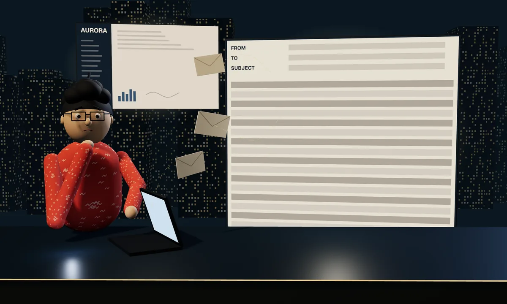

NAB · Corporate & Institutional Banking · Jan – Jun 2026 · 8 min read
Hundreds of millions approved, then a day of email. In testing, the hand-off took five minutes.
Why this case is here: Research to priority to proof: scoring what bankers said, scoping around another team, and a bar set before design.
Live since mid-2026 · results from testing.
Nine scenes follow, then the full written case, with the confidential part behind a password. Every number carries a stamp that says how I know it.
- Senior Product Designer, design lead for straight-through processing
- Product owner, business analyst, tech lead, QE and front-end engineers, a parallel submission-redesign team
- Live since mid-2026 · results from testing
- Hand-off after approvalup to a day → ~5 minTested
- ExQual, target Silver4.40 / 5Tested
- Taps for the same steps13 → 9Tested
The problem
Hundreds of millions approved. Then someone opens Outlook.




The research
Five of five bankers handed over by email. Three problems mattered most.
We sorted 136 interview notes into 12 clusters and scored each one: how many bankers raised it, how bad it was, how close it sat to the goal. The formula went on the slide, so the priority was something the team could check.
- 5 of 5
- bankers handed over by email
- RecordBanker interviews
- hours → 1 day
- turnaround; at worst 2–3 days
- RecordWhat bankers told us
- 136 → 12 → 3
- notes → clusters → critical
- RecordScored, formula shared
The reframe
Not a faster email. No email.
The three critical clusters were the email hand-off, the wish for automation and the status black hole. Another team was redesigning the whole submission flow at the same time, so we shipped the hand-off first and left the full flow to them.
The easy version
- A better email template
- Fix everything bankers raised
- Wait for the submission redesign
The call
- Send it from the platform bankers already use
- Build for the three clusters that scored highest
- The hand-off now, agreed with the submission team

The hand-off, as a road
Before: a day of email, and no status.
Three tools and one thread. Details copied from a spreadsheet and the platform, then replies, clarifications and re-sends, while nobody could see where the request was.
After: one platform, four stops.
Filter, select, initiate, status. Eligibility is checked first. The limits system works in the background, and the banker never leaves the platform.
Every facility comes back with a status.
Fulfilled, or failed with the reason in words. Send again in bulk, or finish one by hand. The lights are an illustration, not data.
- Before: a day of email, and no status. Three tools and one thread. Details copied from a spreadsheet and the platform, then replies, clarifications and re-sends, while nobody could see where the request was.
- After: one platform, four stops. Filter, select, initiate, status. Eligibility is checked first. The limits system works in the background, and the banker never leaves the platform.
- Every facility comes back with a status. Fulfilled, or failed with the reason in words. Send again in bulk, or finish one by hand. The lights are an illustration, not data.
The design
Every failure says why, and offers two ways out.
All five test sessions asked for the specific reason when a facility fails. Retrying a data problem only repeats it, so each failed row names the problem, then offers to send again or finish by hand. Screens and the prototype walkthrough are shared on request.
- Filter, select, send, track: approved facilities go to operations in one action, inside the platform bankers already use.
- Eligibility first: a blocked status or a restricted country says why before anyone waits on it.
- Every failure names the problem, then offers two ways out: send again in bulk, or finish one by hand.
- The platform’s own patterns, so bankers moved through it without guidance.
In their words
The first reaction in testing.
“Do you still need email?”
The proof
Gold, against a Silver target.
Five sessions with six bankers on the prototype. The five minutes is a test time, not production, and “before” is what bankers told us in interviews.
- ~5 min
- for the whole hand-off, from up to a day
- Tested5 sessions, 6 bankers
- 4.40 / 5
- ExQual, target Silver
- TestedGold band
- 13 → 9
- taps for the same steps
- TestedOld against new
- 3 → 1
- tools: spreadsheet, email, platform
- TestedValidated flow
- 8.0 / 10
- likely to recommend
- TestedAverage, 0–10 scale
The result
Straight-through. For real.

Leading the work
The bar was set in week two. Nobody saw the design for the first time at hand-off.
- Set an ExQual target of Silver before design, and compared friction new against current at the end.
- Brought people in as the design firmed up: product from day one, then business analysis and the tech lead, then QE and front end.
- Agreed the split with the designer leading the submission redesign, so the hand-off shipped without waiting.
- Scored the research in the open: 136 notes, 12 clusters, three critical.
Read the full case
In one line: After NAB approves a corporate facility, often worth hundreds of millions, the banker has to ask operations to set it up. That hand-off ran on email: details copied from a spreadsheet, threads of corrections, and no way to see status. I led the design that moved it into the credit platform bankers already use. In testing with six bankers the whole hand-off took about five minutes, where bankers told us it used to take up to a day.
| Role | Senior Product Designer, design lead for straight-through processing (STP) |
| Team | Product owner, business analyst, tech lead, QE and front-end engineers, and the designer leading a parallel redesign of credit submission |
| Users | Corporate bankers in Corporate & Institutional Banking, and the operations team that sets up limits |
| When | Jan – Jun 2026: research, design and testing to the end of March, then build and release |
| Status | Live since mid-2026. The results below come from testing; there's no production hand-off time yet. |
| Results | Hand-off about 5 min, from up to a day (tested, 5 sessions, 6 bankers) · ExQual 4.40 / 5, Gold, target Silver (tested) · 13 → 9 taps, 3 tools → 1 (tested) · Q3 FY26 award for ownership and stakeholder partnership (record) |
Thirty-second version
- Problem. All five bankers we interviewed handed approved facilities to operations by email. They copied details from a spreadsheet and the credit platform, then waited hours, sometimes a day, at worst two or three, through threads of corrections, with no way to see where a request was.
- What I did. Sorted 136 interview notes into 12 clusters and scored each one, so three came out on top: the email hand-off, the wish for automation, and the status black hole. Designed the hand-off as four steps inside the platform: filter, select, initiate, status. Eligibility is checked first, the limits system works in the background, and every failure says why. Shipped the hand-off first, because another team was redesigning the whole submission flow.
- Result. Five test sessions with six bankers. In all five, bankers found the main flow clear and accepted both ways to recover from a failure. ExQual 4.40 out of 5 (Gold, against a Silver target), likely to recommend 8.0 out of 10, taps down from 13 to 9, three tools down to one, and about five minutes for the whole hand-off. All five sessions asked for the specific reason when a facility fails, so every failed row names it. A banker's first reaction: "Do you still need email?"
How the work ran
| Step | What happened |
|---|---|
| Explore (~2 weeks, from 12 Jan) | Stakeholder interviews, secondary research, a mental model and a service blueprint. ExQual target set before any design |
| Design (~2 sprints) | Concepts, a usability test, fixes, edge and error cases. Reviews with my manager, the design system team, accessibility and the wider design team. The product owner was in from day one; the business analyst and tech lead, then QE and front end, joined as the design firmed up |
| Validate and hand off (~2 weeks, to 27 Mar) | Usability testing, a friction comparison of new against current, the spec, a developer walkthrough, content fixes, sign-off with my manager and head of area |
| Build and release (Apr – Jun) | Engineering built it and it went live in mid-2026. The little work left after release went to my manager, and I moved to RegShield |
Behind the password: the journey before and after, how we scored the research, what bankers said at each stage of testing, the decision log and how I led.
The full case is behind a password.
This is confidential bank work, so the details are encrypted and no screens are shown. The password is in my application email, or write to me and I’ll send it. Screens and the prototype walkthrough are shared on request.